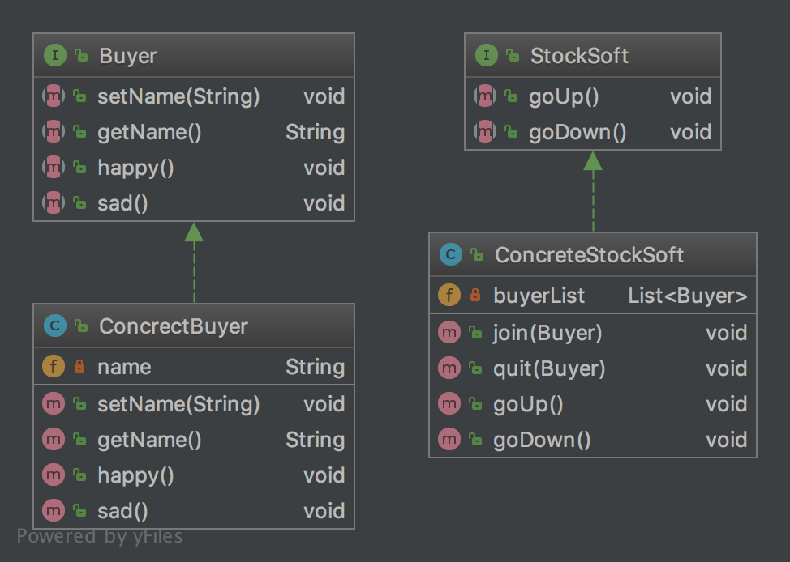

设计模式学习之观察者
说明
观察者模式在日常开发中使用频率也是非常高的，它建立了对象与对象之间的关系，一个对象的行为改变会通知到另一个对象，被通知的对象根据通知做出相应的处理动作。在观察者中分为目标对象（被观察者）、观察者。观察者模式是一种对象行为模式。
观察者模式
现在很多人都购买股票，在市面上有很多的股票软件供广大股民使用。股票软件一般会在用户关注的股票有变动时发送消息来通知股民。在这里，某一支股票就是目标对象，广大股民与股票软件就是观察者，他们根据股票的行情变化来做出相应买入或者卖出操作。这一需求可以使用观察者模式进行实现。代码如下：
先来定义一个抽象的购买股票的股民们，他们有喜有悲的心情:
package cn.imcompany.observer.stock;
/**
* Created by tomyli on 2018/6/23.
* Github: https://github.com/peng051410
*/
public interface Buyer {
void setName(String name);
String getName();
void happy();
void sad();
}
再来定义具体的股民行为实现类：
package cn.imcompany.observer.stock;
/**
* Created by tomyli on 2018/6/23.
* Github: https://github.com/peng051410
*/
public class ConcrectBuyer implements Buyer {
private String name;
@Override
public void setName(String name) {
this.name = name;
}
@Override
public String getName() {
return name;
}
@Override
public void happy() {
System.out.println(this.getName() + ":happy");
}
@Override
public void sad() {
System.out.println(this.getName() + ":sad");
}
}
具体的股民实现了喜与悲的方法，这样观察者已经准备就绪。下面来定义股票软件：
package cn.imcompany.observer.stock;
/**
* Created by tomyli on 2018/6/23.
* Github: https://github.com/peng051410
*/
public interface StockSoft {
void goUp();
void goDown();
}
上面定义了一个抽象的股票软件，它有两个方法，一个股票上涨，一个是股票下跌。接下来实现具体的股票软件
package cn.imcompany.observer.stock;
import java.util.ArrayList;
import java.util.List;
/**
* Created by tomyli on 2018/6/23.
* Github: https://github.com/peng051410
*/
public class ConcreteStockSoft implements StockSoft {
private List<Buyer> buyerList;
public ConcreteStockSoft() {
this.buyerList = new ArrayList<>();
}
public void join(Buyer buyer) {
buyerList.add(buyer);
}
public void quit(Buyer buyer) {
buyerList.remove(buyer);
}
@Override
public void goUp() {
buyerList.forEach(Buyer::happy);
}
@Override
public void goDown() {
buyerList.forEach(Buyer::sad);
}
}
这是一个具体的股票软件，它持有一个购买指定股票的股民列表，还有股民加入与退出的方法，实现了股票上涨时的方法，在上涨时会通知股民，调用股民的happy方法，在股票下跌时调用股民的sad方法。接着做一下测试:
package cn.imcompany.observer.stock;
/**
* Created by tomyli on 2018/6/23.
* Github: https://github.com/peng051410
*/
public class StockTest {
public static void main(String[] args) {
ConcreteStockSoft niuStock = new ConcreteStockSoft();
ConcrectBuyer buyer1, buyer2, buyer3;
buyer1 = new ConcrectBuyer();
buyer1.setName("buyer1");
buyer2 = new ConcrectBuyer();
buyer2.setName("buyer2");
buyer3 = new ConcrectBuyer();
buyer3.setName("buyer3");
niuStock.join(buyer1);
niuStock.join(buyer2);
niuStock.join(buyer3);
niuStock.goUp();
niuStock.quit(buyer1);
niuStock.goDown();
}
}
在测试类中定义了三位购买股票的股民，股票软件把他们加入到维护的股民列表中，这时股票软件发现股票涨了，就调用goUp方法通知了列表中购买股票的股民们。接着股民1选择了卖出股票，则他在软件的维护列表中被移除，这时股票软件发现股票跌了，此时再一次通知持有股票的股民们，这时股民1已经收不到任何的通知，因为他已经不股票软件的通知列表中，此时只股民2与股民3在那悲伤中…
实现的观察者模式的类图：  表面上看股票软件与股民没有任何关系，但是在具体股票软件中维护了股民的列表(buyList)，这样可以在软件发现有变化时调用股民的方法来进行通知。
评论
Comments powered by Disqus